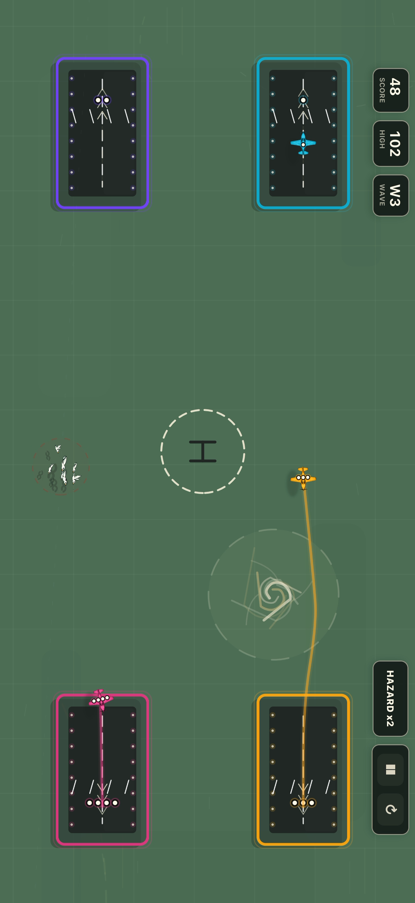

Draw flight paths
Every route is touch-first. Tap an aircraft, sketch a path, and adjust before the skies get too crowded.
Air traffic control arcade
Gridlock: Terminal turns the control tower into a fast iPhone arcade challenge. Draw flight paths, land aircraft, and keep the terminal alive when routes start crossing.

Why it works
Every route is touch-first. Tap an aircraft, sketch a path, and adjust before the skies get too crowded.
Helicopters, planes, and jets need the correct landing zones. Matching the destination is simple. Surviving the rush is not.
Crossed routes, birds, turbulence, and screen edges turn each clean landing into a pressure decision.
Gridlock is built for repeatable arcade runs, not a long setup flow. One more attempt is always close.
More Gridlock guides